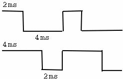
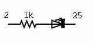

A simple Pulse Width Modulation trick with Linux/RTAI
By Pramode C.E.
In an earlier article, I had discussed the basics of realtime programming with Linux/RTAI. This article demonstrates a nice trick which you can do on your home machine, provided you are willing to hook up a simple circuit to your parallel port (and, of course, run an RTAI patched kernel). I also demonstrate elementary use of:
- Inter-task messages
- Mail boxes
Be careful when you play with PC hardware - don't come looking for me if you burn up something!
The Trick
You want to make an LED light up, slowly. It gets brighter, brighter, brighter.... It should then go off - again, little by little. This should keep on repeating. By controlling the current flowing through it, we can control the brightness of the LED - but trouble is, our PC parallel port gives us only two voltage levels - low (0V) and high (around 5V). As this can't be varied, we will only be able to bring the LED on and make it go off - instantaneously - which is not what we would like to do.
Pulse Width Modulation
Imagine that you are cycling along a road, in a rather peculiar way. You pedal hard for 3 seconds, then you sit idle for 7 seconds - again, you pedal hard for 3 seconds and sit idle for 7 seconds. If you keep on doing this, you will cover the distance between two points in a certain amount of time - by dividing the distance by time, you get an `average' speed. What happens to this average speed if you increase the amount of time pedalling? It surely goes up, and if you decrease the pedalling time, it goes down. In a similar way, instead of applying a constant DC voltage on the LED, we apply a signal of a fixed frequency (say 1KHz, period of 1ms). The LED will burn brightly if out of the total 1ms period, the signal stays high for say .8ms and low for only .2ms. By varying the duty cycle of the signal (keeping the frequency fixed), we will be able to deliver variable levels of power to the circuit, making it brighter and dimmer. We are now able to do analog control in a purely digital manner!

The Hardware
You won't need anything more than an LED (preferably a bright one) and a 1K resistor. The resistor and the LED should be connected in series between pin number 2 (an output pin) and pin number 25 (ground) of the parallel port. The 8 output pins (2 to 9) of the parallel port can be accessed via IO port 0x378. Writing a 1 to 0x378 will result in only pin number 2 going high; writing 0xff will result in all pins going high - you write some other pattern and you can control the logic level at any of the pins.

The resistor is to limit the current flowing through the circuit to a few milli amps. The trouble is that the LED will burn only feebly when you limit the current through it. A solution is to use a transistor as a switch.
The Software
The basic idea is simple - we write a real-time task which will turn on the LED, sleep for some time, turn it off, and again sleep for some time. The total on plus off time is 1ms. Initially, the on time would be 0 and off time, 1ms. In the next iteration, the on time would become 1*1microsecond and off time would become (1ms - on time). In the next iteration, the on time would be 2*1microsecond, and so on. In the 1000th iteration on time would be 1000*1microsecond, ie 1ms and off time would be (1ms - on time), which would be 0. Once we reach here, we start bringing down the on time so that it ultimately becomes 0 and off time becomes 1ms. This process is repeated. So, in 1 seconds time (each iteration takes 1ms, and we have 1000 iterations), the LED will go from off to the brightest possible level and in the next 1 second, it comes down to its off state slowly.
Here is the code which implements this idea:
#include <linux/kernel.h>
#include <linux/module.h>
#include <rtai.h>
#include <rtai_sched.h>
#define STACK_SIZE 4096
#define MIN_ON_PERIOD 0
#define TOTAL_PERIOD 1000000 /* 1ms */
#define NSTEPS 1000
#define STEP_PERIOD 1000
#define LPT1 0x378
static RTIME on_time, off_time, total_period;
static RT_TASK my_task;
enum direction {DOWN, UP};
static void pwm_task(int n)
{
int step = 0;
static int dir = UP;
while(1) {
outb(0xff, LPT1);
rt_sleep(on_time);
outb(0x0, LPT1);
rt_sleep(off_time);
if(step == NSTEPS) {
dir = !dir;
step = 0;
}
step++;
if(dir == UP) on_time = nano2count(step*STEP_PERIOD);
else if(dir == DOWN) on_time = total_period - nano2count(step*STEP_PERIOD);
off_time = total_period - on_time;
}
}
int init_module(void)
{
RTIME now;
rt_set_oneshot_mode();
rt_task_init(&my_task, pwm_task, 0, STACK_SIZE, 0, 0, 0);
start_rt_timer(0);
on_time = nano2count(MIN_ON_PERIOD);
off_time = nano2count(TOTAL_PERIOD);
total_period = nano2count(TOTAL_PERIOD);
now = rt_get_time() + total_period;
rt_task_make_periodic(&my_task, now, total_period);
return 0;
}
void cleanup_module(void)
{
stop_rt_timer();
rt_busy_sleep(10000000);
rt_task_delete(&my_task);
}
The pwm_task's code should be easy to understand.
Because RTAI ensures us that realtime tasks would always meet their deadlines, penalizing only non-realtime tasks, we see that the PWM generation process continues smoothly even when the system is heavily loaded. The time `step' of 1 microsecond in our code will be difficult for RTAI to achieve, but we won't be getting any visual indications regarding it (unless we use an oscilloscope to watch the waveform). Also, ours is just a `fun' program!
Sending Messages
Tasks can send messages to each other - a message is a simple integer value. Here is a small program which demonstrates message passing:
#include <linux/module.h>
#include <rtai.h>
#include <rtai_sched.h>
#define LPT1_BASE 0x378
#define STACK_SIZE 4096
#define TIMERTICKS 1000000000
static RT_TASK tasks[2];
static void task_sender(int t)
{
int msg = 0xab;
RT_TASK *r;
r = rt_send(&tasks[1], msg);
rt_printk("sender: r = %x\n", r);
}
static void task_receiver(int t)
{
int msg;
RT_TASK *r;
r = rt_receive(&tasks[0], &msg);
rt_printk("receiver: msg = %x\n", msg);
rt_printk("receiver: r = %x\n", r);
}
int init_module(void)
{
RTIME tick_period, now;
rt_set_periodic_mode();
rt_task_init(&tasks[0], task_sender, 0, STACK_SIZE, 0, 0, 0);
rt_task_init(&tasks[1], task_receiver, 0, STACK_SIZE, 0, 0, 0);
rt_printk("sender = %x\n", &tasks[0]);
rt_printk("recevier = %x\n", &tasks[1]);
tick_period = start_rt_timer(nano2count(TIMERTICKS));
now = rt_get_time();
rt_task_make_periodic(&tasks[1], now + tick_period, tick_period);
rt_task_make_periodic(&tasks[0], now + 2*tick_period, tick_period);
return 0;
}
void cleanup_module(void)
{
stop_rt_timer();
rt_busy_sleep(10000000);
rt_task_delete(&tasks[0]);
rt_task_delete(&tasks[1]);
}
The recevier task starts executing at the next timer tick. It immediately
inovkes rt_receive. The first argument is address of the RT_TASK object
corresponding to the sender task. Because the sender is not yet active,
task_receive blocks. At the next timer tick, task_sender becomes active
and sends the `message' 0xab to task_receiver. The receiver task comes out
of the block and prints the received message as well as the address of the
RT_TASK object corresponding to the sender task.
Using Mailboxes
A mailbox is a convenient mechanism using which multiple tasks can communicate with each other. Let's look at a small program:
#include <linux/module.h>
#include <rtai.h>
#include <rtai_sched.h>
#define LPT1_BASE 0x378
#define STACK_SIZE 4096
#define TIMERTICKS 1000000000
static RT_TASK tasks[2];
static MBX my_mbx;
static void task_sender(int t)
{
int msg = 0x12cd, r;
r = rt_mbx_send(&my_mbx, &msg, sizeof(msg));
rt_printk("sender: r = %d\n", r);
}
static void task_receiver(int t)
{
int msg, r;
r = rt_mbx_receive(&my_mbx, &msg, sizeof(msg));
rt_printk("receiver: msg = %x\n", msg);
rt_printk("receiver: r = %d\n", r);
}
int init_module(void)
{
RTIME tick_period, now;
rt_set_periodic_mode();
rt_task_init(&tasks[0], task_sender, 0, STACK_SIZE, 0, 0, 0);
rt_task_init(&tasks[1], task_receiver, 0, STACK_SIZE, 0, 0, 0);
rt_mbx_init(&my_mbx, 4*sizeof(int));
tick_period = start_rt_timer(nano2count(TIMERTICKS));
now = rt_get_time();
rt_task_make_periodic(&tasks[1], now + tick_period, tick_period);
rt_task_make_periodic(&tasks[0], now + 2*tick_period, tick_period);
return 0;
}
void cleanup_module(void)
{
stop_rt_timer();
rt_busy_sleep(10000000);
rt_mbx_delete(&my_mbx);
rt_task_delete(&tasks[0]);
rt_task_delete(&tasks[1]);
}
A mailbox is represented by a static variable of type MBX. We create a new mailbox by calling rt_mbx_init. The second argument is the size of the mailbox. The sender task calls rt_mbx_send and stores a message `msg' of size `sizeof(msg)' in the mailbox. The receiver task receives the message by calling rt_mbx_receive. The receiver will block until all the bytes of the message have been received (or until some error occurs).
Conclusion
I started exploring Linux/RTAI out of curiosity, but I am being tempted to learn more. I hope my excitement becomes contagious and more readers start tinkering on their own. Just don't forget to tell us about your experiments!
![[BIO]](../gx/2002/note.png) I am an instructor working for IC Software in Kerala, India. I would have loved
becoming an organic chemist, but I do the second best thing possible, which is
play with Linux and teach programming!
I am an instructor working for IC Software in Kerala, India. I would have loved
becoming an organic chemist, but I do the second best thing possible, which is
play with Linux and teach programming!